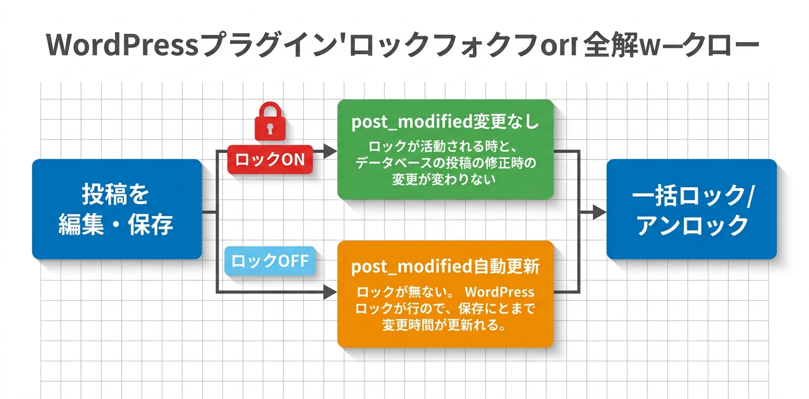

Kashiwazaki SEO Lock Modified Date マニュアル
Kashiwazaki SEO Lock Modified Date は、WordPress投稿の更新日（post_modified）をロックし、軽微な編集時に更新日が自動変更されるのを防止するSEOプラグインです。メタボックスから個別に日付を調整でき、全投稿の一括ロック・アンロックにも対応します。
投稿の更新日（post_modified）は、検索エンジンがコンテンツの新鮮さを判断する指標の一つです。本プラグインは、誤字修正などの軽微な編集時に更新日が自動変更されることを防ぎ、意図的なコンテンツ更新のみを反映させます。
主な機能
更新日ロック
軽微な編集時にpost_modifiedの自動更新を防止
個別日付調整
メタボックスから投稿ごとに更新日を手動で変更可能
一括操作
全投稿の一括ロック・アンロックに対応
プラグインの特長
- 投稿エディタのメタボックスでロック状態のトグル（オン/オフ）が可能
- メタボックスから投稿ごとに更新日（post_modified）を手動で変更可能
- 全投稿の一括ロック・アンロックをAJAX経由で実行可能
- ロックの切り替えと手動変更はその場で保存（投稿の保存は不要）
- 更新日が公開日より前・GMT 未記録といった日付の不整合を確認・修復可能
- フロントエンド出力なし（JSON-LD、メタタグなし） -- 管理画面のみで動作
- 軽量でサイト表示速度に影響を与えない設計

SEO・GEO（生成AI最適化）への効果
更新日制御による「鮮度」シグナルの最適化
検索エンジンは投稿の更新日（post_modified）を「コンテンツの鮮度」を判断する重要なシグナルとして使用します。誤字修正やフォーマット調整などの軽微な編集でも更新日が変わってしまうと、実質的なコンテンツ更新がないにもかかわらず「更新された」という誤ったシグナルを検索エンジンに送ることになります。本プラグインにより、意図した場合にのみ更新日を変更できます。
不要な再クロールの防止
更新日が頻繁に変わると、検索エンジンのクローラーが不要な再クロールを行い、クロールバジェットを浪費します。更新日をロックすることで、安定したクロールスケジュールを維持し、本当に重要なコンテンツ更新にクロールリソースを集中させることができます。
コンテンツリフレッシュ戦略への活用
手動日付調整機能により、コンテンツを大幅にリライトした際に意図的に更新日を変更し、検索エンジンに「このコンテンツは最新の情報に更新されました」というシグナルを送ることができます。これはSEOにおけるコンテンツリフレッシュ戦略の実行に不可欠な機能です。
生成AI（GEO）への対応
AIは投稿の更新日をコンテンツの最新性を評価する指標として利用する可能性があります。安定した更新日はAIに対してコンテンツの信頼性を示し、不必要な更新日の変動はコンテンツの評価を不安定にする可能性があります。更新日を意図的に管理することで、AIによるコンテンツの正確な時期評価を支援します。
目次（マニュアル構成）
| ページ | 内容 |
|---|---|
| 概要 | プラグインの機能概要、SEO/GEO効果、動作要件 |
| インストール・初期設定 | インストール手順、メタボックスの確認、基本設定 |
| 使い方 | 個別ロック、手動日付変更、一括ロック・アンロック操作 |
| トラブルシューティング | よくある問題と対処法、動作要件、技術仕様、アーキテクチャ |
動作要件
| 項目 | 要件 |
|---|---|
| WordPress | 6.0 以上 |
| PHP | 7.4 以上 |
| 対応ブラウザ | Chrome、Firefox、Safari、Edge（最新版） |
インストール後すぐに使い始めたい場合は、インストール・初期設定ページに進んでください。